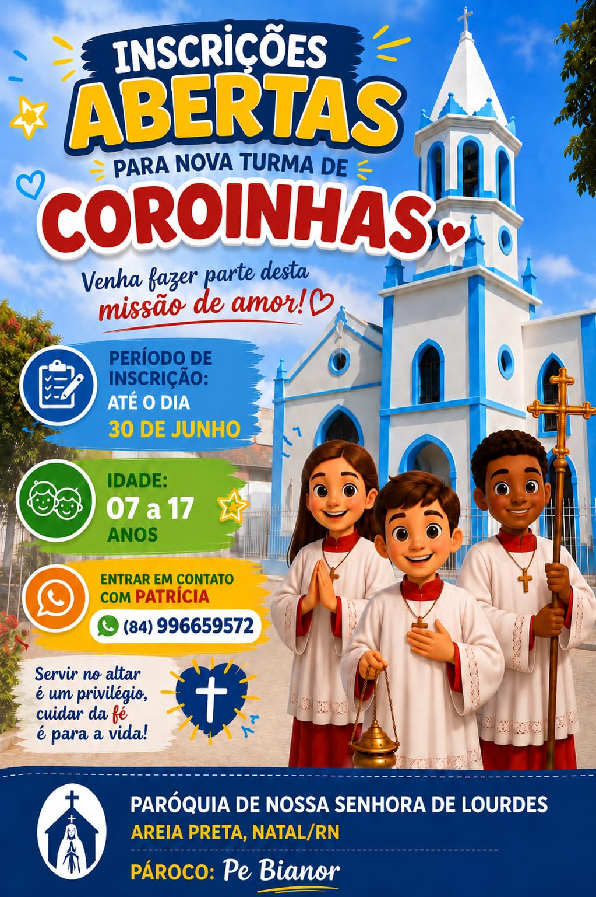

Comunidade paroquial
Paróquia de Nossa Senhora de Lourdes
Acompanhe os comunicados semanais, encontros, inscrições abertas e atividades fixas da nossa paróquia.

Atualização da semana
Comunicados semanais
Esta área pode ser atualizada sempre que novos avisos forem divulgados.
Programação permanente
Comunicados fixos
Atividades recorrentes e informações permanentes da comunidade.
Atendimento